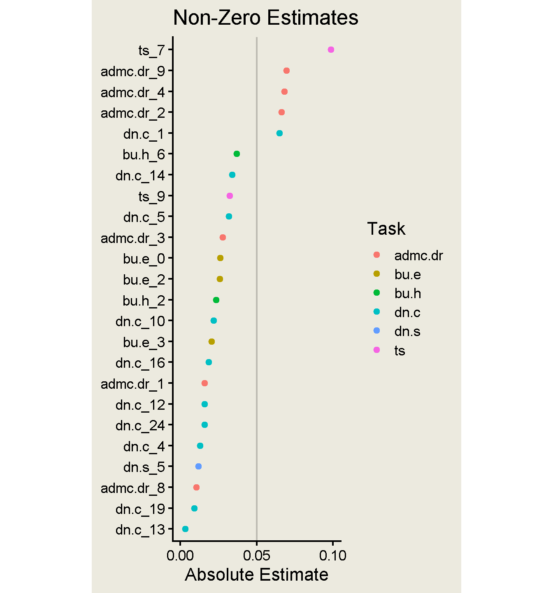
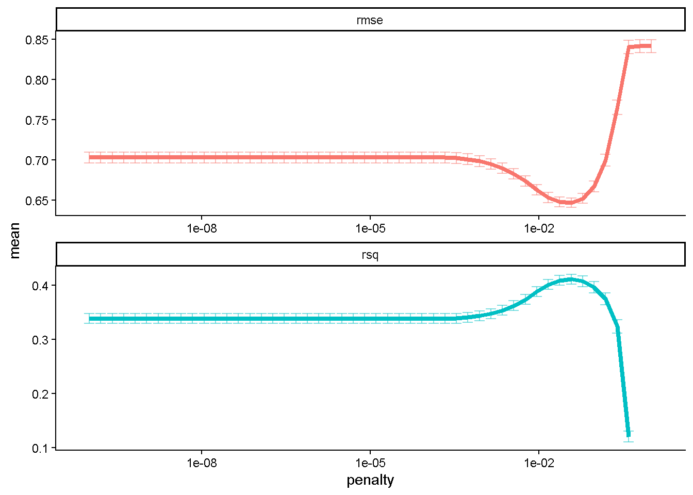
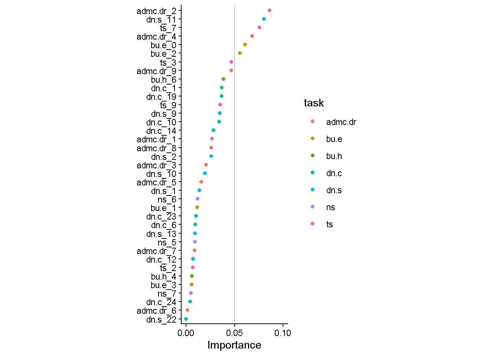

Code
library(tidyverse)
library(tidymodels)
library(vip)Jessica Helmer
March 6, 2026
v5_dat_wide <- v5_dat |>
# condensing denominator neglect scores down to one score per item pair
mutate(.by = c(subject_id, item),
score = ifelse(task == "dn.c" | task == "dn.s",
mean(score),
score)) |>
unique() |>
select(-c(time, task)) |>
pivot_wider(names_from = "item", values_from = "score",
id_cols = c(subject_id, sscore)) |>
# alert alert !!
drop_na()v5_dat_split <- initial_split(v5_dat_wide)
v5_dat_train <- training(v5_dat_split)
v5_dat_test <- testing(v5_dat_split)
v5_dat_recipe <- recipe(sscore ~ ., data = v5_dat_train) |>
update_role(subject_id, new_role = "ID") |>
step_normalize(all_numeric(), -all_outcomes())
lasso_spec <- linear_reg(penalty = 0.1, mixture = 1) %>%
set_engine("glmnet")
wf <- workflow() %>%
add_recipe(v5_dat_recipe)
lasso_fit <- wf %>%
add_model(lasso_spec) %>%
fit(data = v5_dat_train)
lasso_estimates <- lasso_fit %>%
extract_fit_parsnip() %>%
tidy()
Attaching package: 'Matrix'The following objects are masked from 'package:tidyr':
expand, pack, unpackLoaded glmnet 4.1-10[1] "(Intercept)" "dn.c" "bu.h" "admc.dr" "dn.s"
[6] "bu.e" "ts" # A tibble: 26 × 3
term estimate penalty
<chr> <dbl> <dbl>
1 dn.c_1 -0.0833 0.1
2 dn.c_19 -0.00459 0.1
3 dn.c_10 -0.0318 0.1
4 dn.c_23 -0.000229 0.1
5 dn.c_24 -0.0132 0.1
6 dn.c_6 -0.0198 0.1
7 dn.c_14 -0.00960 0.1
8 bu.h_4 0.00309 0.1
9 bu.h_6 0.0800 0.1
10 admc.dr_1 -0.00154 0.1
# ℹ 16 more rowslasso_estimates |>
filter(estimate != 0 & term != "(Intercept)") |>
mutate(task = str_split_i(term, "_", 1)) |>
ggplot(aes(y = fct_reorder(term, abs(estimate)), x = abs(estimate),
color = task)) +
geom_point() +
annotate("segment", x = 0.05, y = -Inf, yend = Inf, alpha = 0.2) +
scale_x_continuous(breaks = c(0, 0.05, 0.1)) +
coord_cartesian(xlim = c(0, 0.1)) +
theme_classic() +
theme(aspect.ratio = 3)
Time of LASSO test
# A tibble: 1 × 1
time
<dbl>
1 16.5Trying some tuning
set.seed(1234)
v5_dat_boot <- bootstraps(v5_dat_train)
lambda_grid <- grid_regular(penalty(), levels = 50)
doParallel::registerDoParallel()
set.seed(2020)
lasso_grid <- tune_grid(
wf %>% add_model(tune_spec),
resamples = v5_dat_boot,
grid = lambda_grid
)
saveRDS(lasso_grid, here::here("Data", "lasso-estimates_tuning.rds"))lasso_grid <- readRDS(here::here("Data", "lasso-estimates_tuning.rds"))
lasso_grid %>%
collect_metrics() %>%
ggplot(aes(penalty, mean, color = .metric)) +
geom_errorbar(aes(
ymin = mean - std_err,
ymax = mean + std_err
),
alpha = 0.5
) +
geom_line(linewidth = 1.5) +
facet_wrap(~.metric, scales = "free", nrow = 2) +
scale_x_log10() +
theme(legend.position = "none")Warning: Removed 2 rows containing missing values or values outside the scale range
(`geom_line()`).
final_lasso %>%
fit(v5_dat_train) %>%
extract_fit_parsnip() %>%
vi() |>
saveRDS(here::here("Data", "lasso_regression.rds"))
final_lasso %>%
fit(v5_dat_train) %>%
extract_fit_parsnip() %>%
vi(lambda = lowest_rmse$penalty) %>%
filter(Importance != 0) |>
mutate(task = str_split_i(Variable, "_", 1)) |>
mutate(
Importance = abs(Importance),
Variable = fct_reorder(Variable, Importance)
) %>%
ggplot(aes(x = Importance, y = Variable, color = task)) +
geom_point() +
labs(y = NULL) +
annotate("segment", x = 0.05, y = -Inf, yend = Inf, alpha = 0.2) +
scale_x_continuous(breaks = c(0, 0.05, 0.1)) +
coord_cartesian(xlim = c(0, 0.1)) +
theme_classic() +
theme(aspect.ratio = 3)
Time of tuned LASSO
final_lasso %>%
fit(v5_dat_train) %>%
extract_fit_parsnip() |>
tidy() |>
filter(estimate != 0 & term != "(Intercept)") |>
mutate(task = str_split_i(term, "_", 1)) |>
inner_join(v5_dat |> select(item, time) |> unique(),
join_by("term" == "item")) |>
summarize(.by = task,
time = sum(time) + get_startup(first(task))) |>
summarize(time = sum(time))# A tibble: 1 × 1
time
<dbl>
1 21.9